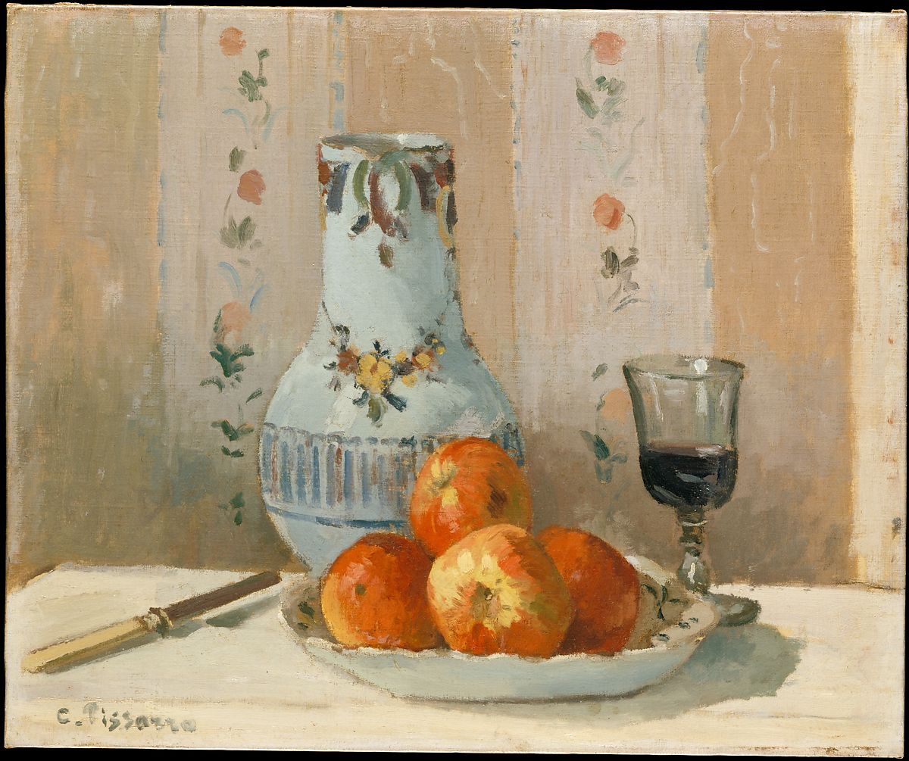

<head>
<meta charset="UTF-8" />
<meta name="keywords" content="drawing, painting" />
<meta name="description" content="drawings by Sunjy" />
<title>Sunjy</title>
<link rel="shortcut icon" type="image/x-icon" href="../../mImages/mCommon/favicon.ico" media="screen" />
<link rel="stylesheet" type="text/css" href="../../mCsses/mCommon/mCssA.css" />
<link rel="stylesheet" type="text/css" href="../../mCsses/mCommon/mCssB.css" />
<link rel="stylesheet" type="text/css" href="../../mCsses/mCommon/mCssC.css" />
<link rel="stylesheet" type="text/css" href="../../mCsses/mCommon/mCssD.css" />
<link rel="stylesheet" type="text/css" href="../../mCsses/mContent/mCssA.css" />
<link rel="stylesheet" type="text/css" href="../../mCsses/mContent/mCssB.css" />
<link rel="stylesheet" type="text/css" href="../../mCsses/mContent/mCssC.css" />
<link rel="stylesheet" type="text/css" href="../../mCsses/mContent/mCssD.css" />
</head>
<script type="text/javascript" src="../../mScripts/mContent/mContentAA.js" /></script>
<script type="text/javascript" src="../../mScripts/mContent/mContentAB.js" /></script>
<script type="text/javascript" src="../../mScripts/mContent/mContentAC.js" /></script>
<script type="text/javascript" src="../../mScripts/mContent/mContentAD.js" /></script>
<script type="text/javascript"></script> 
<script type="text/javascript">
document.write('<div class="mImgAbsolute"></div>');
/*
document.write('<p class="mFontSizeBColor" />From a white paper...</p>');
document.write('<table class="center"><tr><td>');
document.write('');
document.write('</td></tr></table>');
*/
</script>


<script type="text/javascript">
document.write('<p class="mFontSizeBColor" />Still Life with Apples and Pitcher</p>');
document.write('<p class="mFontSizeSColor" />By Camille Pissarro, 1872. Unlike Monet, Renoir, Cézanne, and other artists in his circle, Pissarro painted few still lifes, most late in his career. This work of 1872 is, therefore, exceptional for its subject, as well as for its clearly expressed forms and subtle manipulation of light. There is only one other comparable painting by the artist, <i>Apples and Pears in a Round Basket</i> of the same year (private collection), which is identical in size and setting to the present canvas, featuring the same floral-patterned wallpaper in the background.</p>');
document.write('<table class="center" /><tr><td>');
document.write('Apples and Pears in a Round Basket</i> of the same year (private collection), which is identical in size and setting to the present canvas, featuring the same floral-patterned wallpaper in the background." />');
document.write('</td></tr></table>');
</script>


